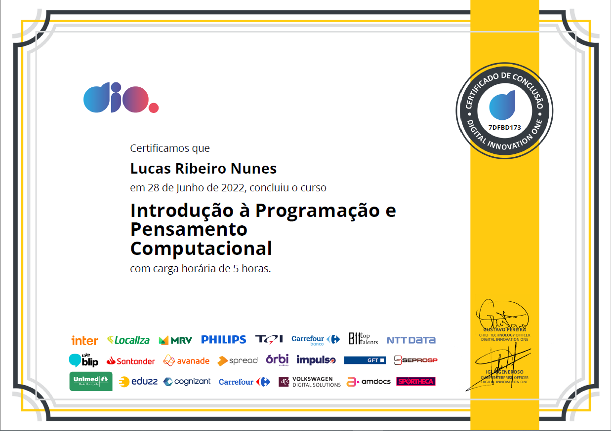
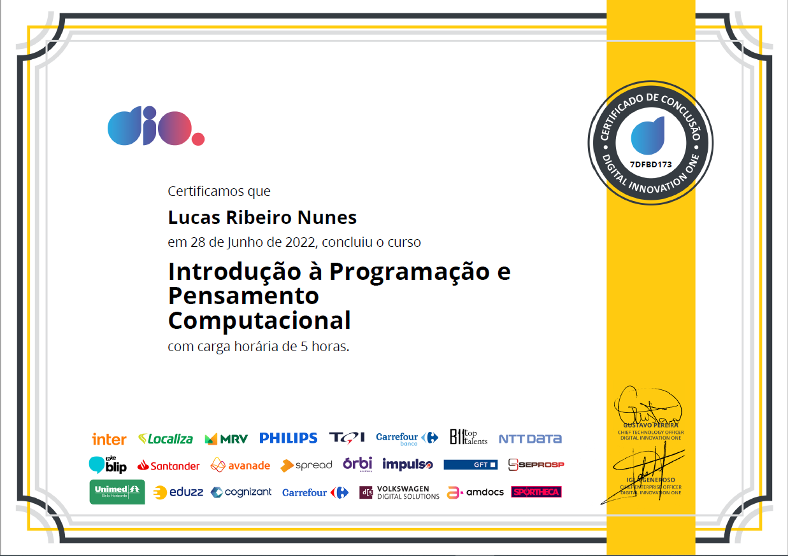

CERTIFICADOS
Certificados que conquistei ao longo do tempo! Ao todo são 19 certificados.
Instituto Federal
Certificados do Instituto Federal de Ciência e Tecnologia.
Fundação Bradesco
Certificados da Fundação Bradesco Escola Virtual.


Udemy
Certificados da Udemy.

Outros
Certificado de outras instituições.

 
